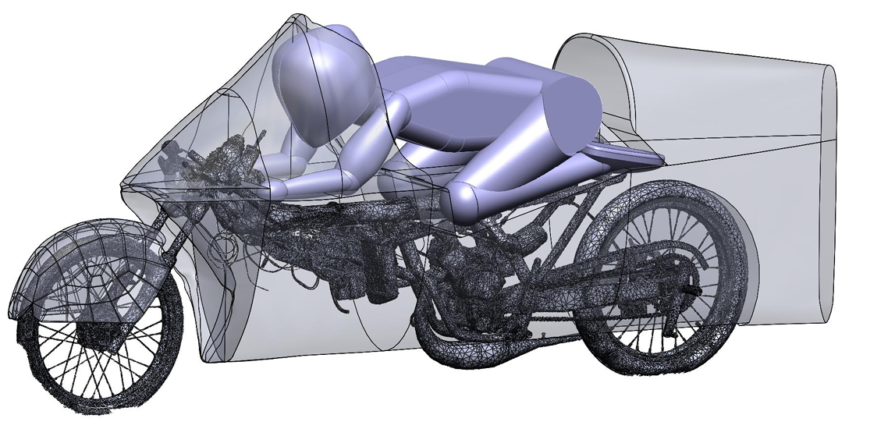
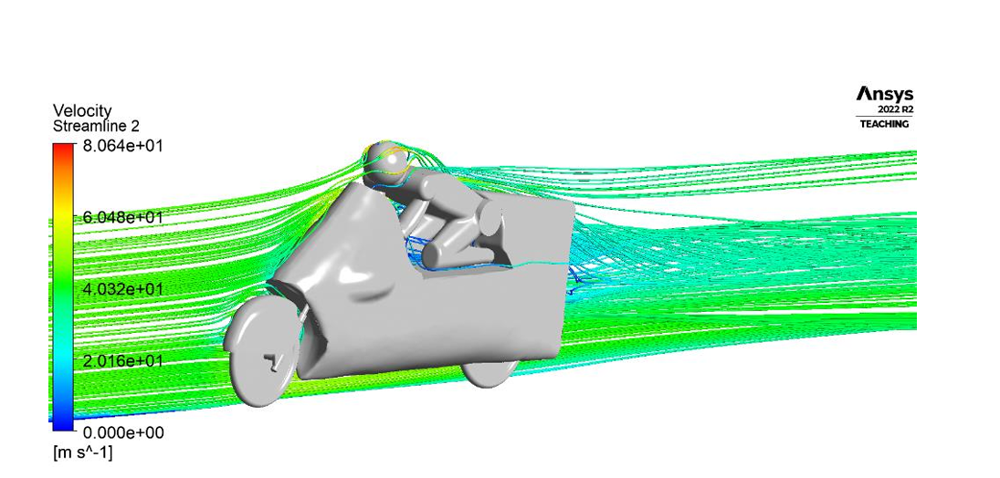
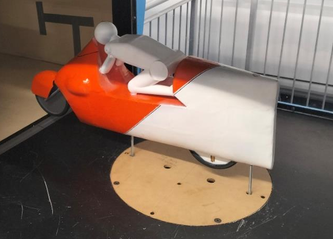

Aerodynamic Fairing Design
CAD, CFD, wind tunnel testing and composite material design for a land speed racer aerodynamic fairing. Successfully broke the NZ 50cc partial streamliner class record.


